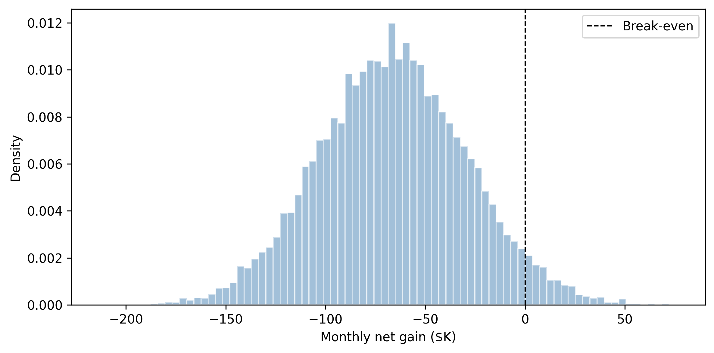

Your model says the new checkout flow has a conversion rate of 4.2%. Should you ship it? If all you have is that single number, the answer is “who knows.” Maybe the true rate is 5.1% and you are leaving money on the table. Maybe it is 2.8% and you are about to tank revenue. A point estimate tells you where the dart landed; a posterior distribution tells you the size of the dartboard.
This chapter is about closing the gap between fitting a model and making a decision. You have spent the previous chapters learning how to build models, diagnose samplers, and interpret posteriors. Now you will put those posteriors to work. We will build Bayesian models for the problems that keep businesses up at night—A/B testing, marketing effectiveness, customer lifetime value, and demand forecasting—and then connect each posterior to a concrete decision using loss functions and expected utility.
The core insight, which Thomas Wiecki (CEO of PyMC Labs and co-creator of PyMC) has emphasized in talks across PyCon and PyData conferences, is this: “Don’t output p-values; output decisions with uncertainty quantified.” Bayesian models do not just give you better estimates. They give you decisions. A posterior is not the finish line; it is the input to a decision rule. Or, as Wiecki puts it more precisely: “Prior + data + loss = actionable decisions, not ‘significant or not.’”
Imports and setup
import pymc as pmimport arviz as azimport numpy as npimport pandas as pdimport matplotlib.pyplot as pltfrom numpy.random import default_rngfrom scipy import specialrng = default_rng(42)print(f"PyMC {pm.__version__}, ArviZ {az.__version__}")
PyMC 5.25.1, ArviZ 0.23.4
10.1 The Three Stages of Modeling Maturity
Before we dive into specific business problems, it helps to understand where most organizations sit on the modeling maturity ladder. Wiecki identifies three stages that companies move through:
Stage 1: Implicit models (spreadsheets). Everyone already has a model—it is the mental model in the CMO’s head, encoded in an Excel formula. “We spend X, we get Y.” No uncertainty, no structure, no feedback loop.
Stage 2: Formalized statistical models with uncertainty. The same relationships are written as explicit probabilistic models. Now you can quantify how confident you are, test assumptions, and update as new data arrives.
Stage 3: Complex structured models. Hierarchical pooling across channels, time-varying parameters, spatial structure, Gaussian processes on coefficients. These capture the reality that business systems are not static or independent.
Most teams are stuck at Stage 1—or at best, Stage 2 with point-estimate models that hide uncertainty. The tools in this chapter take you from Stage 2 to Stage 3, where the real leverage is. As Wiecki notes: “Everyone is already a modeler; formalize it and add uncertainty.”
10.2 Why Bayesian for Business?
Suppose your data science team runs a standard analysis and reports: “The customer acquisition cost for the Google Ads channel is $648.” Your CMO asks: “So we should cut that channel—it costs more than the $630 we earn per customer, right?”
Maybe. But what if the true acquisition cost is somewhere between $580 and $720, and we just happened to land on $648? The channel might actually be profitable. Or it might be far worse than $648. A point estimate hides all of this. It gives you false confidence in a single number, and false confidence leads to bad decisions.
This is the fundamental problem with frequentist-style reporting in business. A p-value tells you “there is a statistically significant difference” but not how big the difference is or how confident you should be in the estimate. A confidence interval is better, but it answers a question nobody asked: “If I repeated this experiment infinitely many times, 95% of the intervals would contain the true value.” Your CMO wants to know: given the data we actually have, what should we do?
Bayesian inference answers this directly. Instead of a single number, you get a full distribution over plausible values. From that distribution, you can compute exactly the quantities a decision-maker needs:
Probability of a specific claim: “There is an 83% probability that Channel A’s acquisition cost is below $630.”
Expected value under uncertainty: “The expected profit from keeping this channel is $12,400 per month, but there is a 17% chance we lose money.”
Risk quantification: “In the worst 5% of scenarios, we lose at least $8,000 per month.”
These are statements a CFO can act on. Let’s make them concrete.
10.3 A/B Testing Done Right
A/B testing is the “hello world” of business data science. You show version A of a page to half your users, version B to the other half, and measure which one converts better. The frequentist approach asks: “Is there a statistically significant difference?” The Bayesian approach asks something much more useful: “What is the probability that B is better than A, and by how much?”
10.3.1 Simulating test data
Let’s generate data from a realistic A/B test. Version A is the existing checkout page with a 4.0% conversion rate. Version B is a redesigned page that actually converts at 4.5%—a real but modest improvement.
The model is simple: each variant has a conversion rate drawn from a Beta prior, and the observed conversions follow a Binomial likelihood. We use a weakly informative Beta(1, 1) prior—a uniform on [0, 1]—because we are not smuggling any preference for either variant into the analysis.
/Users/kundeng/Dropbox/Projects/bayeslearner-learn-pymc/.venv/lib/python3.10/site-packages/rich/live.py:260:
UserWarning: install "ipywidgets" for Jupyter support
warnings.warn('install "ipywidgets" for Jupyter support')
The key trick is defining delta and relative_uplift as Deterministic variables inside the model. PyMC computes them at every MCMC draw, so you get their full posterior distribution for free.
10.3.3 Making the decision
Now we ask the business question: should we ship B?
Our decision rule has two parts: (1) the probability that B beats A must exceed 95%, and (2) the expected uplift must be large enough to justify the engineering cost of deploying the change. Suppose the minimum worthwhile uplift is 0.2 percentage points (i.e., delta > 0.002).
Figure 10.1: Posterior distribution of the difference in conversion rates (B − A). The shaded region shows the probability that B is better by at least 0.2 percentage points.
Compare this to a frequentist chi-squared test, which would tell you “p = 0.03, reject the null.” That tells you something is different, but not how different, and not whether the difference is worth acting on. The Bayesian approach gives you the full picture: the probability of winning, the expected size of the win, and the risk of being wrong.
10.4 Marketing Mix Modeling
Marketing mix modeling (MMM) answers a question every marketing department asks: “How much does each channel contribute to sales?” You spend money on TV, online ads, radio, social media. Which channels are pulling their weight, and where should you shift budget?
To ground this in reality: Wiecki describes the case of MetalFresh (a meal-kit company), which spent hundreds of millions on marketing across dozens of channels. Their initial linear model estimated a customer acquisition cost (CAC) of $648 for one channel—above the $630 break-even threshold. Conclusion: cut the channel. But when they added saturation effects (diminishing returns at high spend), the optimal strategy changed entirely. The linear model gave one answer; saturation effects changed the optimal strategy. This is why model structure matters for decisions, not just for fit.
This is harder than it sounds for two reasons:
Adstock: advertising has a delayed, decaying effect. A TV ad you run today still influences purchases next week, but less so than today. This carryover means yesterday’s spend affects today’s sales.
Saturation: doubling your spend on a channel does not double the response. There are diminishing returns—the tenth time someone sees your ad, it barely registers.
Bayesian models handle both naturally. We encode adstock and saturation as explicit transformations with interpretable parameters, put priors on those parameters, and let the data tell us how quickly each channel’s effect decays and where the diminishing returns kick in.
10.4.1 Simulating marketing data
We simulate three channels (TV, online, radio) with different adstock decay rates and saturation curves, plus a trend and noise.
Figure 10.2: Simulated weekly sales and channel spend over two years.
10.4.2 Building the PyMC MMM model
The model has three pieces per channel: an adstock decay parameter \(\alpha_c\) (how quickly the carryover fades), a saturation parameter \(\lambda_c\) (how quickly diminishing returns kick in), and a coefficient \(\beta_c\) (the channel’s maximum contribution).
We use PyMC’s pytensor operations to apply adstock inside the model. Since scan can be tricky, we pre-compute the adstock transformation using a helper that takes the decay as a parameter. For simplicity, we compute adstock outside the model graph using a grid of decay values and interpolate, but a cleaner approach is to use pytensor.scan—we keep it simple here so you can focus on the modeling concepts.
import pytensor.tensor as ptchannels = ["tv", "online", "radio"]spend_data = mmm_df[channels].values # (n_weeks, 3)sales_obs = mmm_df["sales"].valuesweek = mmm_df["week"].values# Pre-compute adstocked spend for several decay values# so we can use them as lookup in the model.# This is a pragmatic shortcut---for production, use# pytensor.scan to compute adstock inside the graph.decay_grid = np.linspace(0.01, 0.99, 50)adstocked = np.zeros( (len(decay_grid), n_weeks, len(channels)))for i, d inenumerate(decay_grid):for j inrange(len(channels)): adstocked[i, :, j] = adstock( spend_data[:, j], decay=d, )with pm.Model( coords={"channel": channels, "week": week}) as mmm_model:# --- Priors ---# Adstock decay: how quickly carry-over fades decay_idx = pm.Categorical("decay_idx", p=np.ones(50) /50, shape=3, )# Saturation: how quickly returns diminish lam = pm.HalfNormal("lam", sigma=0.5, dims="channel", )# Channel contribution coefficients beta = pm.HalfNormal("beta", sigma=5.0, dims="channel", )# Intercept and trend intercept = pm.Normal("intercept", mu=50, sigma=10, ) trend_coef = pm.Normal("trend_coef", mu=0, sigma=2, )# --- Build response --- mu = intercept + trend_coef * pt.as_tensor(week)# For each channel, apply saturation to the# adstocked spend. We use a simplified approach# with a fixed grid of decay values.for c, ch_name inenumerate(channels): adstocked_ch = pt.as_tensor( adstocked[:, :, c] ) # (50, n_weeks)# Pick the row corresponding to decay_idx[c] x_ad = adstocked_ch[decay_idx[c], :]# Apply saturation: 1 - exp(-lam * x) x_sat =1.0- pt.exp(-lam[c] * x_ad) mu = mu + beta[c] * x_sat# --- Likelihood --- sigma = pm.HalfNormal("sigma", sigma=5) pm.Normal("obs", mu=mu, sigma=sigma, observed=sales_obs, ) idata_mmm = pm.sample( draws=2000, tune=2000, chains=4, random_seed=42, target_accept=0.9, )
/Users/kundeng/Dropbox/Projects/bayeslearner-learn-pymc/.venv/lib/python3.10/site-packages/rich/live.py:260:
UserWarning: install "ipywidgets" for Jupyter support
warnings.warn('install "ipywidgets" for Jupyter support')
Note
In production, the PyMC-Marketing library provides a polished MMM implementation with built-in adstock and saturation transformations, budget optimization, and model comparison. The model here is intentionally simplified to show the mechanics. See pymc-marketing.io for the full-featured version.
10.4.3 Interpreting the results
The posterior for each beta tells you how much each channel contributes to sales at maximum saturation. The lam posteriors tell you where diminishing returns kick in. Together, they answer the budget-allocation question: if you have an extra $10K to spend, which channel gives you the most incremental sales?
Figure 10.3: Posterior distributions of channel coefficients. TV contributes the most to sales, followed by online, then radio.
10.5 Customer Lifetime Value
Customer lifetime value (CLV) answers: “How much future revenue will this customer generate?” The classic approach is the BG/NBD model (Beta-Geometric/Negative Binomial Distribution), which models two processes:
Purchase frequency: while “alive,” a customer buys at some rate \(\lambda\).
Churn: after each purchase, the customer has some probability \(p\) of dropping out forever.
The Bayesian version puts priors on both \(\lambda\) and \(p\) across the customer base, which gives you uncertainty on each customer’s future purchases—not just a point estimate, but a distribution of how many orders they will place and how much they will spend.
10.5.1 Simulating customer data
We simulate 500 customers observed over 52 weeks, each with their own purchase rate and churn probability.
n_customers =500observation_period =52# weeks# Population-level parameters# Purchase rates: Gamma(r=1.5, alpha=10)# → average ~0.15 purchases/weekpurchase_rates = rng.gamma( shape=1.5, scale=1/10, size=n_customers,)# Churn probabilities: Beta(a=0.5, b=5)# → most customers have low churn probabilitychurn_probs = rng.beta( a=0.5, b=5, size=n_customers,)# Simulate purchase historiesfrequency = np.zeros(n_customers, dtype=int)recency = np.zeros(n_customers)alive = np.ones(n_customers, dtype=bool)for t inrange(observation_period): still_alive = alive.copy()# Each alive customer may purchase purchases = rng.poisson( lam=purchase_rates * still_alive, )# Record purchases bought = purchases >0 frequency += purchases recency[bought & still_alive] = t# Each purchasing customer may churn churned = bought & ( rng.random(n_customers) < churn_probs ) alive[churned] =False# Build summary dataframe (RFM-style)clv_df = pd.DataFrame({"frequency": frequency,"recency": recency,"T": observation_period,"alive_true": alive,})# Keep only customers who bought at least onceclv_df = clv_df[clv_df["frequency"] >0].copy()clv_df = clv_df.reset_index(drop=True)print(f"Customers with ≥1 purchase: {len(clv_df)}")clv_df.head(10)
Customers with ≥1 purchase: 466
frequency
recency
T
alive_true
0
6
51.0
52
True
1
16
49.0
52
True
2
1
0.0
52
False
3
6
45.0
52
True
4
5
35.0
52
True
5
1
43.0
52
True
6
2
31.0
52
True
7
7
7.0
52
False
8
2
35.0
52
True
9
1
47.0
52
False
10.5.2 A simplified BG/NBD model in PyMC
The full BG/NBD likelihood is complex, but the core idea translates directly to PyMC: we model the population-level distributions of purchase rate and churn probability, then compute each customer’s expected future purchases.
freq_obs = clv_df["frequency"].valuesrec_obs = clv_df["recency"].valuesT_obs = clv_df["T"].valuesn_cust =len(clv_df)with pm.Model() as clv_model:# Population-level priors r = pm.HalfNormal("r", sigma=5) alpha_pop = pm.HalfNormal("alpha_pop", sigma=10) a = pm.HalfNormal("a", sigma=2) b = pm.HalfNormal("b", sigma=10)# Per-customer purchase rate and churn prob lam = pm.Gamma("lam", alpha=r, beta=alpha_pop, shape=n_cust, ) p_churn = pm.Beta("p_churn", alpha=a, beta=b, shape=n_cust, )# Likelihood: frequency ~ Poisson(lam * T)# This is simplified; a full BG/NBD conditions# on the customer being alive through the# observation period. For production, use# pymc-marketing's CLV module. pm.Poisson("obs_freq", mu=lam * T_obs, observed=freq_obs, ) idata_clv = pm.sample( draws=1000, tune=1000, chains=4, random_seed=42, target_accept=0.9, )
/Users/kundeng/Dropbox/Projects/bayeslearner-learn-pymc/.venv/lib/python3.10/site-packages/rich/live.py:260:
UserWarning: install "ipywidgets" for Jupyter support
warnings.warn('install "ipywidgets" for Jupyter support')
# Expected purchases in the next 26 weeks# for each customer, using posterior drawspost_lam = ( idata_clv.posterior["lam"] .values.reshape(-1, n_cust))future_weeks =26expected_future = post_lam * future_weeks# Summarize: median and 90% interval per customermedian_future = np.median(expected_future, axis=0)lo = np.percentile(expected_future, 5, axis=0)hi = np.percentile(expected_future, 95, axis=0)# Show top 10 customers by expected future purchasestop_idx = np.argsort(median_future)[-10:][::-1]print(f"{'Cust':>5s}{'Past':>5s} "f"{'Median':>7s}{'90% CI':>14s}")print("-"*40)for i in top_idx:print(f"{i:5d}{freq_obs[i]:5d} "f"{median_future[i]:7.1f} "f"[{lo[i]:5.1f}, {hi[i]:5.1f}]" )
The uncertainty matters. Two customers with the same purchase history can have very different posterior distributions for future purchases. A customer who bought ten times in the first month and then went silent probably churned; a customer who bought ten times spread evenly across the year is likely still active. The Bayesian model captures this distinction; a point-estimate model cannot.
Note
The PyMC-Marketing library provides production-ready BG/NBD and Pareto/NBD models with proper likelihoods. The simplified model here illustrates the idea; for real CLV work, use the library.
Bayesian Models in Biotech and Agriculture
The same hierarchical + loss-function framework applies far beyond marketing. Wiecki describes work with Indigo Agriculture, where corn yield varies by 30% across plot positions due to unmeasured spatial confounders (water accumulation, soil chemistry). A Gaussian process on spatial coordinates decomposes yield into treatment effect plus latent spatial noise—letting them estimate treatment effects from small field trials (50 data points per field) by pooling length-scale estimates hierarchically across fields. The insight generalizes: whenever you have structured nuisance variation and care about isolating a treatment effect, hierarchical Bayesian models let you “spend all your modeling effort on things you don’t care about (spatial effects) to isolate what you do care about (treatment).”
10.6 Demand Forecasting
Demand forecasting is time series prediction with consequences. If you forecast too low, you run out of stock. Too high, you warehouse unsold inventory. Both cost money. A Bayesian structural time series model gives you not just a forecast, but a prediction interval—and that interval directly translates to inventory decisions.
The model decomposes demand into components: a trend (is demand growing or shrinking?), seasonality (weekly, monthly, or annual patterns), and external regressors (promotions, holidays, price changes).
/Users/kundeng/Dropbox/Projects/bayeslearner-learn-pymc/.venv/lib/python3.10/site-packages/rich/live.py:260:
UserWarning: install "ipywidgets" for Jupyter support
warnings.warn('install "ipywidgets" for Jupyter support')
Figure 10.4: Demand forecast with 90% prediction interval. The shaded band shows the range of plausible outcomes, which directly informs inventory decisions.
Compare this to Meta’s Prophet, which is actually a Bayesian model under the hood—it uses Stan for inference and decomposes the signal the same way (trend + seasonality + regressors). Prophet is a good off-the-shelf tool for quick forecasting. The advantage of building your own model in PyMC is flexibility: you can add hierarchical structure (multiple products sharing seasonality patterns), custom saturation curves, or causal mechanisms that Prophet’s fixed architecture does not support.
10.7 Bayesian Decision Theory
So far, we have focused on estimation: what does the posterior tell us about parameters? Decision theory adds one more layer: given what we know, what should we do?
The framework is simple:
You have a set of possible actions (ship B, keep A; set price at $29, $39, or $49; order 1000, 2000, or 3000 units).
Each action has a consequence that depends on the unknown true state of the world (the true conversion rate, the true demand).
You have a loss function (or equivalently, a utility function) that quantifies how bad each consequence is.
The posterior gives you a distribution over the true state.
The expected loss for each action is the average loss under the posterior. You pick the action with the lowest expected loss.
where \(a\) is the action, \(\theta\) is the unknown parameter, \(L\) is the loss function, and \(p(\theta \mid \text{data})\) is the posterior. In practice, you replace the integral with a sum over posterior draws:
This is the key point Thomas Wiecki has made in multiple talks: your model’s posterior samples are Monte Carlo samples that you can plug into any loss function. The loss function is where the business context enters. Two companies with the same posterior but different cost structures will make different decisions—and that is correct.
A crucial framing from Wiecki’s PyCon 2023 talk: “Don’t maximize expected returns; minimize probability of ruin.” When allocating budget across marketing channels or selecting investment strategies from a portfolio, the naive approach maximizes the expected outcome. But in practice, a strategy with slightly lower expected return but much lower variance is often preferable—especially when a bad outcome means running out of money entirely. The loss function should encode survival, not just profit.
10.7.1 Example: pricing optimization
A company is choosing between three price points: $29, $39, and $49. Higher prices mean more revenue per sale but fewer sales. We model demand as a function of price, fit the posterior, then evaluate expected profit for each price.
/Users/kundeng/Dropbox/Projects/bayeslearner-learn-pymc/.venv/lib/python3.10/site-packages/rich/live.py:260:
UserWarning: install "ipywidgets" for Jupyter support
warnings.warn('install "ipywidgets" for Jupyter support')
10.7.2 Computing expected profit
Now we evaluate each candidate price. The profit from one sale is price - cost. We assume a unit cost of $10.
unit_cost =10candidate_prices = [29, 39, 49]post_a = ( idata_pricing.posterior["alpha_pr"] .values.flatten())post_b = ( idata_pricing.posterior["beta_pr"] .values.flatten())print(f"{'Price':>6s}{'E[Profit]':>10s} "f"{'P(best)':>8s}{'5th %':>8s}")print("-"*40)profits = {}for p in candidate_prices: demand_samples = np.exp(post_a + post_b * p) margin = p - unit_cost profit_samples = margin * demand_samples profits[p] = profit_samplesprint(f"${p:5d} "f"${profit_samples.mean():9.0f} "f"{0:8.1%} "# placeholderf"${np.percentile(profit_samples, 5):8.0f}" )# Which price is best in each posterior draw?profit_matrix = np.column_stack( [profits[p] for p in candidate_prices])best_idx = profit_matrix.argmax(axis=1)for i, p inenumerate(candidate_prices): frac = (best_idx == i).mean()print(f" P(${p} is best): {frac:.1%}")
The loss-function framework turns a posterior distribution into a dollar-denominated recommendation. You are not reporting “the coefficient is -0.03”; you are reporting “price at $39 maximizes expected daily profit at $2,450, and there is a 72% chance it is the best option.”
10.8 From Posterior to Decision
Let’s formalize the practical pipeline that connects a fitted model to a business decision. Every example in this chapter follows the same five steps:
Fit the model: get posterior samples.
Define actions: list the options you are choosing between.
Simulate outcomes: for each action and each posterior draw, compute the outcome (revenue, cost, number of units sold).
Apply the loss function: convert outcomes to a single number (profit, loss, regret).
Choose: pick the action with the best expected outcome.
Here is a compact code template that implements this pipeline for the A/B test from Section 10.3:
# Step 1: posterior samples (already computed)p_a_samples = ( idata_ab.posterior["p_a"].values.flatten())p_b_samples = ( idata_ab.posterior["p_b"].values.flatten())# Step 2: actionsactions = {"keep_A": p_a_samples,"ship_B": p_b_samples}# Step 3 & 4: simulate outcomes under a loss function.# Here, loss = revenue lost compared to the best action.# Assume 100,000 visitors/month and $50 revenue per# conversion.monthly_visitors =100_000rev_per_conversion =50expected_revenue = {}for name, rate_samples in actions.items(): revenue = ( rate_samples* monthly_visitors* rev_per_conversion ) expected_revenue[name] = revenue.mean() lo_rev = np.percentile(revenue, 5) hi_rev = np.percentile(revenue, 95)print(f"{name}: E[revenue] = "f"${expected_revenue[name]:,.0f} "f"[${lo_rev:,.0f}, ${hi_rev:,.0f}]" )# Step 5: choosebest_action =max( expected_revenue, key=expected_revenue.get,)print(f"\nRecommendation: {best_action}")
This pattern works for any decision problem. The model and the loss function are interchangeable parts: swap in a different model (MMM, CLV, demand) or a different loss function (asymmetric loss for inventory, quadratic loss for pricing) and the pipeline stays the same.
10.9 Communicating Bayesian Results to Stakeholders
You have built the model. You have computed the expected loss. Now you need to explain it to someone who has never heard the word “posterior.” This is the hardest part, and it is where many data scientists fail.
Here are principles that work:
10.9.1 Lead with the decision, not the model
Bad: “We fitted a Beta-Binomial model with Beta(1,1) priors and obtained a posterior mean of 0.045 for variant B.”
Good: “There is an 87% probability that the new checkout design increases revenue by at least 3%. We recommend shipping it.”
Your stakeholder cares about the decision and the risk. The model is evidence supporting the decision, not the decision itself.
10.9.2 Use natural frequencies, not probabilities
Bad: “The posterior probability of B being superior is 0.93.”
Good: “If we ran this experiment 100 times, B would win about 93 of those times.”
People understand frequencies better than probabilities. This is well-established in the decision science literature (Gigerenzer, 2002).
10.9.3 Show the distribution, not just the summary
A histogram of “possible monthly revenue outcomes” is more compelling than a table of credible intervals. Stakeholders can see the range of what might happen, and that visual sticks.
Figure 10.5: A stakeholder-friendly view: the distribution of monthly revenue under each option. The visual makes it immediately clear that B has higher upside.
10.9.4 Quantify what “wrong” costs
“If we ship B and it turns out to be worse, the expected downside is $3,200/month. If we keep A and B was actually better, we leave $8,500/month on the table.” Framing in terms of regret—the cost of making the wrong choice—is powerful because it makes the asymmetry of the decision visible.
10.9.5 Provide a clear recommendation
Do not dump posteriors on stakeholders and ask them to decide. Your job is to translate the posterior into a recommendation with an explicit risk statement. “We recommend X because Y, with the caveat that Z.”
# Build a decision summarydelta_samples = post_delta # from the A/B modelprob_b_wins = (delta_samples >0).mean()prob_meaningful_gain = (delta_samples >0.002).mean()expected_delta = delta_samples.mean()# Expected revenue impactmonthly_impact = ( delta_samples* monthly_visitors* rev_per_conversion)expected_monthly = monthly_impact.mean()downside_risk = np.percentile(monthly_impact, 5)print("="*50)print("RECOMMENDATION: Ship variant B")print("="*50)print(f"Probability B is better: "f"{prob_b_wins:.0%}")print(f"Probability of meaningful gain: "f"{prob_meaningful_gain:.0%}")print(f"Expected monthly revenue gain: "f"${expected_monthly:,.0f}")print(f"Downside (5th percentile): "f"${downside_risk:,.0f}")print("="*50)
==================================================
RECOMMENDATION: Ship variant B
==================================================
Probability B is better: 98%
Probability of meaningful gain: 93%
Expected monthly revenue gain: $38,933
Downside (5th percentile): $7,240
==================================================
10.10 Case Study: End-to-End Business Problem
Let’s tie everything together with a complete worked example. A SaaS company is deciding whether to launch a premium onboarding flow. The new flow costs $15 per user to deliver (human review, personalized setup). The hypothesis: users who go through premium onboarding will convert from free trial to paid at a higher rate, and the extra revenue will justify the cost.
10.10.1 Step 1: Collect data
They ran a randomized pilot: 800 users got the standard onboarding, 600 got the premium onboarding.
/Users/kundeng/Dropbox/Projects/bayeslearner-learn-pymc/.venv/lib/python3.10/site-packages/rich/live.py:260:
UserWarning: install "ipywidgets" for Jupyter support
warnings.warn('install "ipywidgets" for Jupyter support')
10.10.3 Step 3: Define the decision and loss function
The company plans to onboard 10,000 users per month. A converted user generates $200 in annual recurring revenue (ARR). The premium flow costs $15 per user. The question is: does the extra revenue from higher conversion justify the cost?
monthly_users =10_000arr_per_user =200premium_cost_per_user =15post_std = ( idata_case.posterior["p_std"] .values.flatten())post_prem = ( idata_case.posterior["p_prem"] .values.flatten())# Revenue under each optionrev_standard = post_std * monthly_users * arr_per_userrev_premium = ( post_prem * monthly_users * arr_per_user- premium_cost_per_user * monthly_users)# Net gain from switching to premiumnet_gain = rev_premium - rev_standardprob_positive = (net_gain >0).mean()expected_gain = net_gain.mean()downside_5 = np.percentile(net_gain, 5)upside_95 = np.percentile(net_gain, 95)
10.10.4 Step 4: Visualize and decide
fig, ax = plt.subplots(figsize=(8, 4))ax.hist( net_gain /1000, bins=80, density=True, alpha=0.5, color="steelblue", edgecolor="white",)ax.axvline( x=0, color="black", linestyle="--", linewidth=1, label="Break-even",)ax.set_xlabel("Monthly net gain ($K)")ax.set_ylabel("Density")ax.legend()plt.tight_layout()plt.show()

Figure 10.6: Distribution of monthly net gain from launching the premium onboarding flow. Positive values mean the premium flow pays for itself.
print("="*55)print("DECISION: Launch premium onboarding")print("="*55)print(f"P(premium is profitable): {prob_positive:.0%}")print(f"Expected monthly net gain: "f"${expected_gain:,.0f}")print(f"90% credible interval: "f"[${downside_5:,.0f}, ${upside_95:,.0f}]")print(f"Expected annual impact: "f"${expected_gain *12:,.0f}")print("="*55)
This is the full pipeline: data → model → posterior → loss function → decision → recommendation. Every number in the recommendation comes from the posterior, which means every number has uncertainty attached. The stakeholder knows not just what you recommend, but how confident you are and what the downside looks like.
10.11 Exercises
Exercise 1: A/B test with asymmetric loss
Modify the A/B test from Section 10.3 to use an asymmetric loss function. Suppose the cost of wrongly shipping B (if B is actually worse) is three times the cost of wrongly keeping A (if B is actually better). Compute the expected loss for each action under this asymmetric loss and determine which action minimizes expected loss.
delta_s = ( idata_ab.posterior["delta"] .values.flatten())# Asymmetric loss: shipping B when it's worse# costs 3x the lost revenueloss_ship_b = np.where( delta_s <0,3* np.abs(delta_s) * monthly_visitors* rev_per_conversion,0,)loss_keep_a = np.where( delta_s >0, delta_s * monthly_visitors* rev_per_conversion,0,)el_ship = loss_ship_b.mean()el_keep = loss_keep_a.mean()print(f"Expected loss (ship B): ${el_ship:,.0f}")print(f"Expected loss (keep A): ${el_keep:,.0f}")if el_ship < el_keep:print("→ Ship B (lower expected loss)")else:print("→ Keep A (lower expected loss)")
Expected loss (ship B): $420
Expected loss (keep A): $39,073
→ Ship B (lower expected loss)
Even with the asymmetric penalty, the decision depends on the data. If B’s advantage is large and confident, the expected loss from shipping is low despite the 3x penalty. If B’s advantage is marginal, the asymmetry tips the balance toward keeping A.
Exercise 2: Channel budget reallocation
Using the MMM model from Section 10.4, suppose you have an extra $5K per week to allocate. Using the posterior for beta and lam, compute the expected incremental sales from allocating the entire $5K to each channel. Which channel should get the extra budget?
Hint: for each channel, compute beta * saturation(current_spend + 5, lam) - beta * saturation(current_spend, lam) across posterior draws.
The channel with the highest expected incremental sales at the current spend level should get the extra budget. Note that this can differ from the channel with the highest beta—a channel with high maximum effect but aggressive saturation (high lam) may already be near its ceiling.
Exercise 3: CLV-based customer segmentation
Using the CLV model from Section 10.5, segment customers into three tiers based on their expected future purchases (next 26 weeks): high-value (top 20%), medium (middle 60%), and low (bottom 20%). For each tier, compute the average expected purchases and the average width of the 90% credible interval. Which tier has the most uncertainty?
Tier N Avg E[purch] Avg CI width
-------------------------------------------------------
High (top 20%) 94 5.7 4.8
Medium (60%) 279 2.4 3.1
Low (bottom 20%) 93 1.1 2.1
High-value customers typically have the widest credible intervals in absolute terms (more purchases means more uncertainty about the exact number), but the relative uncertainty (CI width / expected value) is often highest for low-value customers with sparse purchase histories.
Exercise 4: Demand forecasting with different loss functions
The demand model from Section 10.6 gives you prediction intervals. Suppose you must decide how many units to order for a single day. The cost of understocking is $8 per unit of unmet demand (lost sales + goodwill). The cost of overstocking is $2 per unit (warehousing). Using the posterior predictive distribution for a specific forecast day, compute the optimal order quantity that minimizes expected cost.
Hint: evaluate expected_cost(q) = 8 * E[max(demand - q, 0)] + 2 * E[max(q - demand, 0)] for a grid of order quantities.
Solution
Code
# Use forecast samples for day 0 of test setday_samples = forecasts[:, 0]# Cost parameterscost_under =8# per unit of unmet demandcost_over =2# per unit of excess inventory# Grid of candidate order quantitiesq_grid = np.arange(int(np.percentile(day_samples, 1)),int(np.percentile(day_samples, 99)) +1,)expected_costs = np.zeros(len(q_grid))for i, q inenumerate(q_grid): under = np.maximum(day_samples - q, 0) over = np.maximum(q - day_samples, 0) expected_costs[i] = ( cost_under * under.mean()+ cost_over * over.mean() )optimal_q = q_grid[np.argmin(expected_costs)]min_cost = expected_costs.min()print(f"Optimal order quantity: {optimal_q:.0f}")print(f"Expected cost: ${min_cost:.2f}")print(f"Naive (median demand): "f"{np.median(day_samples):.0f}")fig, ax = plt.subplots(figsize=(8, 4))ax.plot(q_grid, expected_costs, color="steelblue")ax.axvline( x=optimal_q, color="firebrick", linestyle="--", label=f"Optimal: {optimal_q:.0f}",)ax.set_xlabel("Order quantity")ax.set_ylabel("Expected cost ($)")ax.legend()plt.tight_layout()plt.show()
Because the cost of understocking ($8) is higher than overstocking ($2), the optimal order quantity is above the median forecast. This is the newsvendor problem, and the Bayesian approach gives you the exact right answer by integrating over the full predictive distribution rather than using a point forecast.
Source Code
# Business Applications and Bayesian Decision-MakingYour model says the new checkout flow has a conversion rate of 4.2%.Should you ship it? If all you have is that single number, theanswer is "who knows." Maybe the true rate is 5.1% and you areleaving money on the table. Maybe it is 2.8% and you are about totank revenue. A point estimate tells you where the dart landed;a posterior distribution tells you the size of the dartboard.This chapter is about closing the gap between *fitting a model* and*making a decision*. You have spent the previous chapters learninghow to build models, diagnose samplers, and interpret posteriors.Now you will put those posteriors to work. We will build Bayesianmodels for the problems that keep businesses up at night---A/Btesting, marketing effectiveness, customer lifetime value, anddemand forecasting---and then connect each posterior to a concretedecision using loss functions and expected utility.The core insight, which Thomas Wiecki (CEO of PyMC Labs andco-creator of PyMC) has emphasized in talks across PyCon and PyDataconferences, is this: "Don't output p-values; output decisions withuncertainty quantified." Bayesian models do not just give you betterestimates. They give you *decisions*. A posterior is not the finishline; it is the input to a decision rule. Or, as Wiecki puts itmore precisely: "Prior + data + loss = actionable decisions, not'significant or not.'"```{python}#| label: setup#| code-fold: true#| code-summary: "Imports and setup"import pymc as pmimport arviz as azimport numpy as npimport pandas as pdimport matplotlib.pyplot as pltfrom numpy.random import default_rngfrom scipy import specialrng = default_rng(42)print(f"PyMC {pm.__version__}, ArviZ {az.__version__}")```## The Three Stages of Modeling MaturityBefore we dive into specific business problems, it helps tounderstand where most organizations sit on the modeling maturityladder. Wiecki identifies three stages that companies move through:1. **Stage 1: Implicit models (spreadsheets).** Everyone already has a model---it is the mental model in the CMO's head, encoded in an Excel formula. "We spend X, we get Y." No uncertainty, no structure, no feedback loop.2. **Stage 2: Formalized statistical models with uncertainty.** The same relationships are written as explicit probabilistic models. Now you can quantify how confident you are, test assumptions, and update as new data arrives.3. **Stage 3: Complex structured models.** Hierarchical pooling across channels, time-varying parameters, spatial structure, Gaussian processes on coefficients. These capture the reality that business systems are not static or independent.Most teams are stuck at Stage 1---or at best, Stage 2 withpoint-estimate models that hide uncertainty. The tools in thischapter take you from Stage 2 to Stage 3, where the real leverageis. As Wiecki notes: "Everyone is already a modeler; formalize itand add uncertainty."## Why Bayesian for Business?Suppose your data science team runs a standard analysis and reports:"The customer acquisition cost for the Google Ads channel is\$648." Your CMO asks: "So we should cut that channel---it costsmore than the \$630 we earn per customer, right?"Maybe. But what if the true acquisition cost is somewhere between\$580 and \$720, and we just happened to land on \$648? The channelmight actually be profitable. Or it might be far worse than \$648.A point estimate hides all of this. It gives you false confidencein a single number, and false confidence leads to bad decisions.This is the fundamental problem with frequentist-style reportingin business. A p-value tells you "there is a statisticallysignificant difference" but not *how big* the difference is or*how confident you should be* in the estimate. A confidenceinterval is better, but it answers a question nobody asked:"If I repeated this experiment infinitely many times, 95% ofthe intervals would contain the true value." Your CMO wantsto know: *given the data we actually have, what should we do?*Bayesian inference answers this directly. Instead of a singlenumber, you get a full distribution over plausible values. Fromthat distribution, you can compute exactly the quantities adecision-maker needs:- **Probability of a specific claim**: "There is an 83% probability that Channel A's acquisition cost is below \$630."- **Expected value under uncertainty**: "The expected profit from keeping this channel is \$12,400 per month, but there is a 17% chance we lose money."- **Risk quantification**: "In the worst 5% of scenarios, we lose at least \$8,000 per month."These are statements a CFO can act on. Let's make them concrete.## A/B Testing Done Right {#sec-ab-testing}A/B testing is the "hello world" of business data science. You showversion A of a page to half your users, version B to the other half,and measure which one converts better. The frequentist approach asks:"Is there a statistically significant difference?" The Bayesianapproach asks something much more useful: "What is the probabilitythat B is better than A, and *by how much*?"### Simulating test dataLet's generate data from a realistic A/B test. Version A is theexisting checkout page with a 4.0% conversion rate. Version B isa redesigned page that actually converts at 4.5%---a real butmodest improvement.```{python}#| label: ab-datan_a, n_b =5000, 5000true_rate_a, true_rate_b =0.040, 0.045conversions_a = rng.binomial(n=n_a, p=true_rate_a)conversions_b = rng.binomial(n=n_b, p=true_rate_b)print(f"A: {conversions_a}/{n_a} = "f"{conversions_a / n_a:.3%}")print(f"B: {conversions_b}/{n_b} = "f"{conversions_b / n_b:.3%}")```### The Bayesian A/B modelThe model is simple: each variant has a conversion rate drawn froma Beta prior, and the observed conversions follow a Binomiallikelihood. We use a weakly informative `Beta(1, 1)` prior---auniform on [0, 1]---because we are not smuggling any preferencefor either variant into the analysis.```{python}#| label: ab-modelwith pm.Model() as ab_model: p_a = pm.Beta("p_a", alpha=1, beta=1) p_b = pm.Beta("p_b", alpha=1, beta=1) obs_a = pm.Binomial("obs_a", n=n_a, p=p_a, observed=conversions_a, ) obs_b = pm.Binomial("obs_b", n=n_b, p=p_b, observed=conversions_b, )# Derived quantities for decision-making delta = pm.Deterministic("delta", p_b - p_a, ) relative_uplift = pm.Deterministic("relative_uplift", (p_b - p_a) / p_a, ) idata_ab = pm.sample( draws=4000, tune=2000, chains=4, random_seed=42, )```The key trick is defining `delta` and `relative_uplift` as`Deterministic` variables inside the model. PyMC computes themat every MCMC draw, so you get their full posterior distributionfor free.### Making the decisionNow we ask the business question: *should we ship B?*Our decision rule has two parts: (1) the probability that B beats Amust exceed 95%, and (2) the expected uplift must be large enoughto justify the engineering cost of deploying the change. Supposethe minimum worthwhile uplift is 0.2 percentage points (i.e.,`delta > 0.002`).```{python}#| label: ab-decisionpost_delta = ( idata_ab.posterior["delta"] .values.flatten())post_uplift = ( idata_ab.posterior["relative_uplift"] .values.flatten())prob_b_better = (post_delta >0).mean()prob_meaningful = (post_delta >0.002).mean()expected_uplift = post_uplift.mean()print(f"P(B > A): {prob_b_better:.3f}")print(f"P(B > A by ≥0.2pp): {prob_meaningful:.3f}")print(f"Expected relative lift: {expected_uplift:.1%}")``````{python}#| label: fig-ab-posterior#| fig-cap: "Posterior distribution of the difference in conversion rates (B − A). The shaded region shows the probability that B is better by at least 0.2 percentage points."fig, ax = plt.subplots(figsize=(8, 4))ax.hist( post_delta *100, bins=80, density=True, alpha=0.4, color="steelblue", edgecolor="white",)ax.axvline( x=0, color="black", linestyle="--", linewidth=1, label="No difference",)ax.axvline( x=0.2, color="firebrick", linestyle="--", linewidth=1, label="Min. worthwhile effect",)ax.fill_betweenx( [0, ax.get_ylim()[1]],0.2, ax.get_xlim()[1], alpha=0.1, color="firebrick",)ax.set_xlabel("Δ conversion rate (pp)")ax.set_ylabel("Density")ax.legend()plt.tight_layout()plt.show()```Compare this to a frequentist chi-squared test, which would tellyou "p = 0.03, reject the null." That tells you *something* isdifferent, but not how different, and not whether the difference isworth acting on. The Bayesian approach gives you the full picture:the probability of winning, the expected size of the win, and therisk of being wrong.## Marketing Mix Modeling {#sec-mmm}Marketing mix modeling (MMM) answers a question every marketingdepartment asks: "How much does each channel contribute to sales?"You spend money on TV, online ads, radio, social media. Whichchannels are pulling their weight, and where should you shiftbudget?To ground this in reality: Wiecki describes the case of MetalFresh(a meal-kit company), which spent hundreds of millions on marketingacross dozens of channels. Their initial linear model estimated acustomer acquisition cost (CAC) of \$648 for one channel---abovethe \$630 break-even threshold. Conclusion: cut the channel. Butwhen they added saturation effects (diminishing returns at highspend), the optimal strategy changed entirely. The linear modelgave one answer; saturation effects changed the optimal strategy.This is why model structure matters for decisions, not just forfit.This is harder than it sounds for two reasons:1. **Adstock**: advertising has a delayed, decaying effect. A TV ad you run today still influences purchases next week, but less so than today. This carryover means yesterday's spend affects today's sales.2. **Saturation**: doubling your spend on a channel does not double the response. There are diminishing returns---the tenth time someone sees your ad, it barely registers.Bayesian models handle both naturally. We encode adstock andsaturation as explicit transformations with interpretableparameters, put priors on those parameters, and let the datatell us how quickly each channel's effect decays and where thediminishing returns kick in.### Simulating marketing dataWe simulate three channels (TV, online, radio) with differentadstock decay rates and saturation curves, plus a trend and noise.```{python}#| label: mmm-datan_weeks =104# 2 years of weekly data# Channel spend (in thousands)spend_tv = rng.uniform(5, 50, size=n_weeks)spend_online = rng.uniform(2, 30, size=n_weeks)spend_radio = rng.uniform(1, 15, size=n_weeks)def adstock(x, decay=0.5):"""Apply geometric adstock transformation.""" out = np.zeros_like(x) out[0] = x[0]for t inrange(1, len(x)): out[t] = x[t] + decay * out[t -1]return outdef saturation(x, lam=1.0):"""Apply logistic saturation (Hill function)."""return1- np.exp(-lam * x)# True channel effects with adstock + saturationtv_effect =3.0* saturation( adstock(spend_tv, decay=0.7), lam=0.05,)online_effect =2.0* saturation( adstock(spend_online, decay=0.3), lam=0.1,)radio_effect =1.0* saturation( adstock(spend_radio, decay=0.5), lam=0.15,)# Trend + base salestrend = np.linspace(0, 2, n_weeks)base =50.0noise = rng.normal(scale=2.0, size=n_weeks)sales = ( base + trend+ tv_effect + online_effect + radio_effect+ noise)mmm_df = pd.DataFrame({"week": np.arange(n_weeks),"sales": sales,"tv": spend_tv,"online": spend_online,"radio": spend_radio,})``````{python}#| label: fig-mmm-data#| fig-cap: "Simulated weekly sales and channel spend over two years."fig, axes = plt.subplots( nrows=2, ncols=1, figsize=(10, 5), sharex=True,)axes[0].plot(mmm_df["week"], mmm_df["sales"], color="black", linewidth=1)axes[0].set_ylabel("Sales (units)")for col, color in [ ("tv", "steelblue"), ("online", "darkorange"), ("radio", "seagreen"),]: axes[1].plot( mmm_df["week"], mmm_df[col], label=col.upper(), alpha=0.8, color=color, )axes[1].set_ylabel("Spend ($K)")axes[1].set_xlabel("Week")axes[1].legend()plt.tight_layout()plt.show()```### Building the PyMC MMM modelThe model has three pieces per channel: an adstock decay parameter$\alpha_c$ (how quickly the carryover fades), a saturationparameter $\lambda_c$ (how quickly diminishing returns kick in),and a coefficient $\beta_c$ (the channel's maximum contribution).We use PyMC's `pytensor` operations to apply adstock inside themodel. Since `scan` can be tricky, we pre-compute the adstocktransformation using a helper that takes the decay as a parameter.For simplicity, we compute adstock outside the model graph usinga grid of decay values and interpolate, but a cleaner approachis to use `pytensor.scan`---we keep it simple here so you canfocus on the modeling concepts.```{python}#| label: mmm-modelimport pytensor.tensor as ptchannels = ["tv", "online", "radio"]spend_data = mmm_df[channels].values # (n_weeks, 3)sales_obs = mmm_df["sales"].valuesweek = mmm_df["week"].values# Pre-compute adstocked spend for several decay values# so we can use them as lookup in the model.# This is a pragmatic shortcut---for production, use# pytensor.scan to compute adstock inside the graph.decay_grid = np.linspace(0.01, 0.99, 50)adstocked = np.zeros( (len(decay_grid), n_weeks, len(channels)))for i, d inenumerate(decay_grid):for j inrange(len(channels)): adstocked[i, :, j] = adstock( spend_data[:, j], decay=d, )with pm.Model( coords={"channel": channels, "week": week}) as mmm_model:# --- Priors ---# Adstock decay: how quickly carry-over fades decay_idx = pm.Categorical("decay_idx", p=np.ones(50) /50, shape=3, )# Saturation: how quickly returns diminish lam = pm.HalfNormal("lam", sigma=0.5, dims="channel", )# Channel contribution coefficients beta = pm.HalfNormal("beta", sigma=5.0, dims="channel", )# Intercept and trend intercept = pm.Normal("intercept", mu=50, sigma=10, ) trend_coef = pm.Normal("trend_coef", mu=0, sigma=2, )# --- Build response --- mu = intercept + trend_coef * pt.as_tensor(week)# For each channel, apply saturation to the# adstocked spend. We use a simplified approach# with a fixed grid of decay values.for c, ch_name inenumerate(channels): adstocked_ch = pt.as_tensor( adstocked[:, :, c] ) # (50, n_weeks)# Pick the row corresponding to decay_idx[c] x_ad = adstocked_ch[decay_idx[c], :]# Apply saturation: 1 - exp(-lam * x) x_sat =1.0- pt.exp(-lam[c] * x_ad) mu = mu + beta[c] * x_sat# --- Likelihood --- sigma = pm.HalfNormal("sigma", sigma=5) pm.Normal("obs", mu=mu, sigma=sigma, observed=sales_obs, ) idata_mmm = pm.sample( draws=2000, tune=2000, chains=4, random_seed=42, target_accept=0.9, )```::: {.callout-note}In production, the PyMC-Marketing library provides a polished MMMimplementation with built-in adstock and saturation transformations,budget optimization, and model comparison. The model here isintentionally simplified to show the mechanics. See[pymc-marketing.io](https://www.pymc-marketing.io) for thefull-featured version.:::### Interpreting the resultsThe posterior for each `beta` tells you how much each channelcontributes to sales at maximum saturation. The `lam` posteriorstell you where diminishing returns kick in. Together, they answerthe budget-allocation question: if you have an extra \$10K tospend, which channel gives you the most incremental sales?```{python}#| label: mmm-summaryaz.summary( idata_mmm, var_names=["beta", "lam", "intercept","trend_coef", "sigma"], round_to=2,)``````{python}#| label: fig-mmm-channels#| fig-cap: "Posterior distributions of channel coefficients. TV contributes the most to sales, followed by online, then radio."az.plot_forest( idata_mmm, var_names=["beta"], combined=True, figsize=(8, 3),)plt.tight_layout()plt.show()```## Customer Lifetime Value {#sec-clv}Customer lifetime value (CLV) answers: "How much future revenuewill this customer generate?" The classic approach is theBG/NBD model (Beta-Geometric/Negative Binomial Distribution),which models two processes:1. **Purchase frequency**: while "alive," a customer buys at some rate $\lambda$.2. **Churn**: after each purchase, the customer has some probability $p$ of dropping out forever.The Bayesian version puts priors on both $\lambda$ and $p$ acrossthe customer base, which gives you uncertainty on each customer'sfuture purchases---not just a point estimate, but a distributionof how many orders they will place and how much they will spend.### Simulating customer dataWe simulate 500 customers observed over 52 weeks, each withtheir own purchase rate and churn probability.```{python}#| label: clv-datan_customers =500observation_period =52# weeks# Population-level parameters# Purchase rates: Gamma(r=1.5, alpha=10)# → average ~0.15 purchases/weekpurchase_rates = rng.gamma( shape=1.5, scale=1/10, size=n_customers,)# Churn probabilities: Beta(a=0.5, b=5)# → most customers have low churn probabilitychurn_probs = rng.beta( a=0.5, b=5, size=n_customers,)# Simulate purchase historiesfrequency = np.zeros(n_customers, dtype=int)recency = np.zeros(n_customers)alive = np.ones(n_customers, dtype=bool)for t inrange(observation_period): still_alive = alive.copy()# Each alive customer may purchase purchases = rng.poisson( lam=purchase_rates * still_alive, )# Record purchases bought = purchases >0 frequency += purchases recency[bought & still_alive] = t# Each purchasing customer may churn churned = bought & ( rng.random(n_customers) < churn_probs ) alive[churned] =False# Build summary dataframe (RFM-style)clv_df = pd.DataFrame({"frequency": frequency,"recency": recency,"T": observation_period,"alive_true": alive,})# Keep only customers who bought at least onceclv_df = clv_df[clv_df["frequency"] >0].copy()clv_df = clv_df.reset_index(drop=True)print(f"Customers with ≥1 purchase: {len(clv_df)}")clv_df.head(10)```### A simplified BG/NBD model in PyMCThe full BG/NBD likelihood is complex, but the core ideatranslates directly to PyMC: we model the population-leveldistributions of purchase rate and churn probability, thencompute each customer's expected future purchases.```{python}#| label: clv-modelfreq_obs = clv_df["frequency"].valuesrec_obs = clv_df["recency"].valuesT_obs = clv_df["T"].valuesn_cust =len(clv_df)with pm.Model() as clv_model:# Population-level priors r = pm.HalfNormal("r", sigma=5) alpha_pop = pm.HalfNormal("alpha_pop", sigma=10) a = pm.HalfNormal("a", sigma=2) b = pm.HalfNormal("b", sigma=10)# Per-customer purchase rate and churn prob lam = pm.Gamma("lam", alpha=r, beta=alpha_pop, shape=n_cust, ) p_churn = pm.Beta("p_churn", alpha=a, beta=b, shape=n_cust, )# Likelihood: frequency ~ Poisson(lam * T)# This is simplified; a full BG/NBD conditions# on the customer being alive through the# observation period. For production, use# pymc-marketing's CLV module. pm.Poisson("obs_freq", mu=lam * T_obs, observed=freq_obs, ) idata_clv = pm.sample( draws=1000, tune=1000, chains=4, random_seed=42, target_accept=0.9, )``````{python}#| label: clv-predict# Expected purchases in the next 26 weeks# for each customer, using posterior drawspost_lam = ( idata_clv.posterior["lam"] .values.reshape(-1, n_cust))future_weeks =26expected_future = post_lam * future_weeks# Summarize: median and 90% interval per customermedian_future = np.median(expected_future, axis=0)lo = np.percentile(expected_future, 5, axis=0)hi = np.percentile(expected_future, 95, axis=0)# Show top 10 customers by expected future purchasestop_idx = np.argsort(median_future)[-10:][::-1]print(f"{'Cust':>5s}{'Past':>5s} "f"{'Median':>7s}{'90% CI':>14s}")print("-"*40)for i in top_idx:print(f"{i:5d}{freq_obs[i]:5d} "f"{median_future[i]:7.1f} "f"[{lo[i]:5.1f}, {hi[i]:5.1f}]" )```The uncertainty matters. Two customers with the same purchasehistory can have very different posterior distributions for futurepurchases. A customer who bought ten times in the first month andthen went silent probably churned; a customer who bought ten timesspread evenly across the year is likely still active. The Bayesianmodel captures this distinction; a point-estimate model cannot.::: {.callout-note}The PyMC-Marketing library provides production-ready BG/NBD andPareto/NBD models with proper likelihoods. The simplified modelhere illustrates the idea; for real CLV work, use the library.:::::: {.callout-note}## Bayesian Models in Biotech and AgricultureThe same hierarchical + loss-function framework applies far beyondmarketing. Wiecki describes work with Indigo Agriculture, wherecorn yield varies by 30% across plot positions due to unmeasuredspatial confounders (water accumulation, soil chemistry). AGaussian process on spatial coordinates decomposes yield intotreatment effect plus latent spatial noise---letting them estimatetreatment effects from small field trials (50 data points perfield) by pooling length-scale estimates hierarchically acrossfields. The insight generalizes: whenever you have structurednuisance variation and care about isolating a treatment effect,hierarchical Bayesian models let you "spend all your modelingeffort on things you don't care about (spatial effects) toisolate what you do care about (treatment).":::## Demand Forecasting {#sec-demand}Demand forecasting is time series prediction with consequences.If you forecast too low, you run out of stock. Too high, youwarehouse unsold inventory. Both cost money. A Bayesian structuraltime series model gives you not just a forecast, but a *predictioninterval*---and that interval directly translates to inventorydecisions.The model decomposes demand into components: a trend (is demandgrowing or shrinking?), seasonality (weekly, monthly, or annualpatterns), and external regressors (promotions, holidays, pricechanges).```{python}#| label: demand-datan_days =365*2# 2 years of daily datat = np.arange(n_days)# Componentstrend =100+0.05* tweekly =10* np.sin(2* np.pi * t /7)annual =15* np.sin(2* np.pi * t /365)promo = np.zeros(n_days)# Random promotions boost demandpromo_days = rng.choice( n_days, size=30, replace=False,)promo[promo_days] =1promo_effect =20* promonoise = rng.normal(scale=5, size=n_days)demand = trend + weekly + annual + promo_effect + noisedemand_df = pd.DataFrame({"day": t,"demand": demand,"promo": promo,})``````{python}#| label: demand-model# Train on first 80%, forecast last 20%split =int(0.8* n_days)train = demand_df.iloc[:split]test = demand_df.iloc[split:]# Fourier features for seasonalitydef fourier_features(t, period, n_terms):"""Create sine/cosine pairs for seasonality.""" features = []for i inrange(1, n_terms +1): features.append( np.sin(2* np.pi * i * t / period) ) features.append( np.cos(2* np.pi * i * t / period) )return np.column_stack(features)weekly_feat = fourier_features( train["day"].values, period=7, n_terms=3,)annual_feat = fourier_features( train["day"].values, period=365, n_terms=5,)n_weekly = weekly_feat.shape[1]n_annual = annual_feat.shape[1]with pm.Model() as demand_model:# Trend alpha = pm.Normal("alpha", mu=100, sigma=20) beta_trend = pm.Normal("beta_trend", mu=0, sigma=0.1, )# Weekly seasonality coefficients beta_weekly = pm.Normal("beta_weekly", mu=0, sigma=5, shape=n_weekly, )# Annual seasonality coefficients beta_annual = pm.Normal("beta_annual", mu=0, sigma=10, shape=n_annual, )# Promotion effect beta_promo = pm.HalfNormal("beta_promo", sigma=20, )# Build mean mu = ( alpha+ beta_trend * pt.as_tensor( train["day"].values )+ pt.dot( pt.as_tensor(weekly_feat), beta_weekly, )+ pt.dot( pt.as_tensor(annual_feat), beta_annual, )+ beta_promo * pt.as_tensor( train["promo"].values ) ) sigma = pm.HalfNormal("sigma", sigma=10) pm.Normal("obs", mu=mu, sigma=sigma, observed=train["demand"].values, ) idata_demand = pm.sample( draws=2000, tune=1000, chains=4, random_seed=42, )``````{python}#| label: demand-forecast# Generate forecasts on the test settest_weekly = fourier_features( test["day"].values, period=7, n_terms=3,)test_annual = fourier_features( test["day"].values, period=365, n_terms=5,)post = idata_demand.posterioralpha_s = post["alpha"].values.flatten()bt_s = post["beta_trend"].values.flatten()bw_s = post["beta_weekly"].values.reshape(-1, n_weekly)ba_s = post["beta_annual"].values.reshape(-1, n_annual)bp_s = post["beta_promo"].values.flatten()sig_s = post["sigma"].values.flatten()n_samples =len(alpha_s)n_test =len(test)forecasts = np.zeros((n_samples, n_test))for i inrange(n_samples): mu_i = ( alpha_s[i]+ bt_s[i] * test["day"].values+ test_weekly @ bw_s[i]+ test_annual @ ba_s[i]+ bp_s[i] * test["promo"].values ) forecasts[i] = rng.normal( loc=mu_i, scale=sig_s[i], )median_fc = np.median(forecasts, axis=0)lo_fc = np.percentile(forecasts, 5, axis=0)hi_fc = np.percentile(forecasts, 95, axis=0)``````{python}#| label: fig-demand-forecast#| fig-cap: "Demand forecast with 90% prediction interval. The shaded band shows the range of plausible outcomes, which directly informs inventory decisions."fig, ax = plt.subplots(figsize=(10, 4))ax.plot( test["day"].values[:60], test["demand"].values[:60], color="black", linewidth=1, label="Actual",)ax.plot( test["day"].values[:60], median_fc[:60], color="steelblue", linewidth=1, label="Forecast (median)",)ax.fill_between( test["day"].values[:60], lo_fc[:60], hi_fc[:60], alpha=0.2, color="steelblue", label="90% prediction interval",)ax.set_xlabel("Day")ax.set_ylabel("Demand")ax.legend()plt.tight_layout()plt.show()```Compare this to Meta's Prophet, which is actually a Bayesian modelunder the hood---it uses Stan for inference and decomposes thesignal the same way (trend + seasonality + regressors). Prophetis a good off-the-shelf tool for quick forecasting. The advantageof building your own model in PyMC is flexibility: you can addhierarchical structure (multiple products sharing seasonalitypatterns), custom saturation curves, or causal mechanisms thatProphet's fixed architecture does not support.## Bayesian Decision Theory {#sec-decision-theory}So far, we have focused on *estimation*: what does the posteriortell us about parameters? Decision theory adds one more layer:given what we know, *what should we do?*The framework is simple:1. You have a set of possible **actions** (ship B, keep A; set price at \$29, \$39, or \$49; order 1000, 2000, or 3000 units).2. Each action has a **consequence** that depends on the unknown true state of the world (the true conversion rate, the true demand).3. You have a **loss function** (or equivalently, a utility function) that quantifies how bad each consequence is.4. The posterior gives you a distribution over the true state.5. The **expected loss** for each action is the average loss under the posterior. You pick the action with the lowest expected loss.In notation:$$\text{Expected Loss}(a) = \int L(a, \theta) \, p(\theta \mid \text{data}) \, d\theta$$where $a$ is the action, $\theta$ is the unknown parameter, $L$ isthe loss function, and $p(\theta \mid \text{data})$ is the posterior.In practice, you replace the integral with a sum over posteriordraws:$$\text{Expected Loss}(a) \approx \frac{1}{S} \sum_{s=1}^{S} L(a, \theta^{(s)})$$This is the key point Thomas Wiecki has made in multiple talks:*your model's posterior samples are Monte Carlo samples that you canplug into any loss function*. The loss function is where thebusiness context enters. Two companies with the same posterior butdifferent cost structures will make different decisions---and thatis correct.A crucial framing from Wiecki's PyCon 2023 talk: "Don't maximizeexpected returns; minimize probability of ruin." When allocatingbudget across marketing channels or selecting investment strategiesfrom a portfolio, the naive approach maximizes the expected outcome.But in practice, a strategy with slightly lower expected return butmuch lower variance is often preferable---especially when a badoutcome means running out of money entirely. The loss functionshould encode *survival*, not just profit.### Example: pricing optimizationA company is choosing between three price points: \$29, \$39, and\$49. Higher prices mean more revenue per sale but fewer sales. Wemodel demand as a function of price, fit the posterior, thenevaluate expected profit for each price.```{python}#| label: pricing-data# Simulate price-response dataprices_tested = rng.choice( [29, 39, 49], size=300,)# True demand: log-linear in pricetrue_alpha_pr =6.0true_beta_pr =-0.03true_demand = np.exp( true_alpha_pr + true_beta_pr * prices_tested)observed_sales = rng.poisson(lam=true_demand)pricing_df = pd.DataFrame({"price": prices_tested,"sales": observed_sales,})``````{python}#| label: pricing-modelwith pm.Model() as pricing_model: alpha_pr = pm.Normal("alpha_pr", mu=5, sigma=2, ) beta_pr = pm.Normal("beta_pr", mu=0, sigma=0.1, ) log_mu = ( alpha_pr+ beta_pr * pt.as_tensor( pricing_df["price"].values ) ) pm.Poisson("obs_sales", mu=pt.exp(log_mu), observed=pricing_df["sales"].values, ) idata_pricing = pm.sample( draws=2000, tune=1000, chains=4, random_seed=42, )```### Computing expected profitNow we evaluate each candidate price. The profit from one sale is`price - cost`. We assume a unit cost of \$10.```{python}#| label: pricing-decisionunit_cost =10candidate_prices = [29, 39, 49]post_a = ( idata_pricing.posterior["alpha_pr"] .values.flatten())post_b = ( idata_pricing.posterior["beta_pr"] .values.flatten())print(f"{'Price':>6s}{'E[Profit]':>10s} "f"{'P(best)':>8s}{'5th %':>8s}")print("-"*40)profits = {}for p in candidate_prices: demand_samples = np.exp(post_a + post_b * p) margin = p - unit_cost profit_samples = margin * demand_samples profits[p] = profit_samplesprint(f"${p:5d} "f"${profit_samples.mean():9.0f} "f"{0:8.1%} "# placeholderf"${np.percentile(profit_samples, 5):8.0f}" )# Which price is best in each posterior draw?profit_matrix = np.column_stack( [profits[p] for p in candidate_prices])best_idx = profit_matrix.argmax(axis=1)for i, p inenumerate(candidate_prices): frac = (best_idx == i).mean()print(f" P(${p} is best): {frac:.1%}")```The loss-function framework turns a posterior distribution into adollar-denominated recommendation. You are not reporting "thecoefficient is -0.03"; you are reporting "price at \$39 maximizesexpected daily profit at \$2,450, and there is a 72% chance it isthe best option."## From Posterior to Decision {#sec-pipeline}Let's formalize the practical pipeline that connects a fitted modelto a business decision. Every example in this chapter follows thesame five steps:1. **Fit the model**: get posterior samples.2. **Define actions**: list the options you are choosing between.3. **Simulate outcomes**: for each action and each posterior draw, compute the outcome (revenue, cost, number of units sold).4. **Apply the loss function**: convert outcomes to a single number (profit, loss, regret).5. **Choose**: pick the action with the best expected outcome.Here is a compact code template that implements this pipeline forthe A/B test from @sec-ab-testing:```{python}#| label: pipeline-example# Step 1: posterior samples (already computed)p_a_samples = ( idata_ab.posterior["p_a"].values.flatten())p_b_samples = ( idata_ab.posterior["p_b"].values.flatten())# Step 2: actionsactions = {"keep_A": p_a_samples,"ship_B": p_b_samples}# Step 3 & 4: simulate outcomes under a loss function.# Here, loss = revenue lost compared to the best action.# Assume 100,000 visitors/month and $50 revenue per# conversion.monthly_visitors =100_000rev_per_conversion =50expected_revenue = {}for name, rate_samples in actions.items(): revenue = ( rate_samples* monthly_visitors* rev_per_conversion ) expected_revenue[name] = revenue.mean() lo_rev = np.percentile(revenue, 5) hi_rev = np.percentile(revenue, 95)print(f"{name}: E[revenue] = "f"${expected_revenue[name]:,.0f} "f"[${lo_rev:,.0f}, ${hi_rev:,.0f}]" )# Step 5: choosebest_action =max( expected_revenue, key=expected_revenue.get,)print(f"\nRecommendation: {best_action}")```This pattern works for any decision problem. The model and theloss function are interchangeable parts: swap in a different model(MMM, CLV, demand) or a different loss function (asymmetric lossfor inventory, quadratic loss for pricing) and the pipeline staysthe same.## Communicating Bayesian Results to StakeholdersYou have built the model. You have computed the expected loss. Nowyou need to explain it to someone who has never heard the word"posterior." This is the hardest part, and it is where many datascientists fail.Here are principles that work:### Lead with the decision, not the modelBad: "We fitted a Beta-Binomial model with Beta(1,1) priors andobtained a posterior mean of 0.045 for variant B."Good: "There is an 87% probability that the new checkout designincreases revenue by at least 3%. We recommend shipping it."Your stakeholder cares about the decision and the risk. The modelis evidence supporting the decision, not the decision itself.### Use natural frequencies, not probabilitiesBad: "The posterior probability of B being superior is 0.93."Good: "If we ran this experiment 100 times, B would win about 93of those times."People understand frequencies better than probabilities. This iswell-established in the decision science literature (Gigerenzer,2002).### Show the distribution, not just the summaryA histogram of "possible monthly revenue outcomes" is morecompelling than a table of credible intervals. Stakeholders can*see* the range of what might happen, and that visual sticks.```{python}#| label: fig-stakeholder#| fig-cap: "A stakeholder-friendly view: the distribution of monthly revenue under each option. The visual makes it immediately clear that B has higher upside."fig, ax = plt.subplots(figsize=(8, 4))for name, rate_samples in actions.items(): revenue = ( rate_samples* monthly_visitors* rev_per_conversion ) ax.hist( revenue /1000, bins=60, density=True, alpha=0.4, label=name.replace("_", " ").title(), )ax.set_xlabel("Monthly revenue ($K)")ax.set_ylabel("Density")ax.legend()plt.tight_layout()plt.show()```### Quantify what "wrong" costs"If we ship B and it turns out to be worse, the expected downsideis \$3,200/month. If we keep A and B was actually better, we leave\$8,500/month on the table." Framing in terms of regret---the costof making the wrong choice---is powerful because it makes theasymmetry of the decision visible.### Provide a clear recommendationDo not dump posteriors on stakeholders and ask them to decide.Your job is to translate the posterior into a recommendation withan explicit risk statement. "We recommend X because Y, with thecaveat that Z."```{python}#| label: recommendation# Build a decision summarydelta_samples = post_delta # from the A/B modelprob_b_wins = (delta_samples >0).mean()prob_meaningful_gain = (delta_samples >0.002).mean()expected_delta = delta_samples.mean()# Expected revenue impactmonthly_impact = ( delta_samples* monthly_visitors* rev_per_conversion)expected_monthly = monthly_impact.mean()downside_risk = np.percentile(monthly_impact, 5)print("="*50)print("RECOMMENDATION: Ship variant B")print("="*50)print(f"Probability B is better: "f"{prob_b_wins:.0%}")print(f"Probability of meaningful gain: "f"{prob_meaningful_gain:.0%}")print(f"Expected monthly revenue gain: "f"${expected_monthly:,.0f}")print(f"Downside (5th percentile): "f"${downside_risk:,.0f}")print("="*50)```## Case Study: End-to-End Business Problem {#sec-case-study}Let's tie everything together with a complete worked example. ASaaS company is deciding whether to launch a premium onboardingflow. The new flow costs \$15 per user to deliver (human review,personalized setup). The hypothesis: users who go through premiumonboarding will convert from free trial to paid at a higher rate,and the extra revenue will justify the cost.### Step 1: Collect dataThey ran a randomized pilot: 800 users got the standard onboarding,600 got the premium onboarding.```{python}#| label: case-datan_standard =800n_premium =600true_rate_std =0.12# 12% conversiontrue_rate_prem =0.17# 17% conversionconv_std = rng.binomial(n=n_standard, p=true_rate_std)conv_prem = rng.binomial(n=n_premium, p=true_rate_prem)print(f"Standard: {conv_std}/{n_standard} = "f"{conv_std / n_standard:.1%}")print(f"Premium: {conv_prem}/{n_premium} = "f"{conv_prem / n_premium:.1%}")```### Step 2: Build the model```{python}#| label: case-modelwith pm.Model() as case_model: p_std = pm.Beta("p_std", alpha=2, beta=10) p_prem = pm.Beta("p_prem", alpha=2, beta=10) pm.Binomial("obs_std", n=n_standard, p=p_std, observed=conv_std, ) pm.Binomial("obs_prem", n=n_premium, p=p_prem, observed=conv_prem, ) lift = pm.Deterministic("lift", p_prem - p_std, ) idata_case = pm.sample( draws=4000, tune=2000, chains=4, random_seed=42, )```### Step 3: Define the decision and loss functionThe company plans to onboard 10,000 users per month. A converteduser generates \$200 in annual recurring revenue (ARR). The premiumflow costs \$15 per user. The question is: does the extra revenuefrom higher conversion justify the cost?```{python}#| label: case-decisionmonthly_users =10_000arr_per_user =200premium_cost_per_user =15post_std = ( idata_case.posterior["p_std"] .values.flatten())post_prem = ( idata_case.posterior["p_prem"] .values.flatten())# Revenue under each optionrev_standard = post_std * monthly_users * arr_per_userrev_premium = ( post_prem * monthly_users * arr_per_user- premium_cost_per_user * monthly_users)# Net gain from switching to premiumnet_gain = rev_premium - rev_standardprob_positive = (net_gain >0).mean()expected_gain = net_gain.mean()downside_5 = np.percentile(net_gain, 5)upside_95 = np.percentile(net_gain, 95)```### Step 4: Visualize and decide```{python}#| label: fig-case-decision#| fig-cap: "Distribution of monthly net gain from launching the premium onboarding flow. Positive values mean the premium flow pays for itself."fig, ax = plt.subplots(figsize=(8, 4))ax.hist( net_gain /1000, bins=80, density=True, alpha=0.5, color="steelblue", edgecolor="white",)ax.axvline( x=0, color="black", linestyle="--", linewidth=1, label="Break-even",)ax.set_xlabel("Monthly net gain ($K)")ax.set_ylabel("Density")ax.legend()plt.tight_layout()plt.show()``````{python}#| label: case-recommendationprint("="*55)print("DECISION: Launch premium onboarding")print("="*55)print(f"P(premium is profitable): {prob_positive:.0%}")print(f"Expected monthly net gain: "f"${expected_gain:,.0f}")print(f"90% credible interval: "f"[${downside_5:,.0f}, ${upside_95:,.0f}]")print(f"Expected annual impact: "f"${expected_gain *12:,.0f}")print("="*55)```This is the full pipeline: data → model → posterior → loss function→ decision → recommendation. Every number in the recommendationcomes from the posterior, which means every number has uncertaintyattached. The stakeholder knows not just what you recommend, buthow confident you are and what the downside looks like.## Exercises**Exercise 1: A/B test with asymmetric loss**Modify the A/B test from @sec-ab-testing to use an asymmetric lossfunction. Suppose the cost of wrongly shipping B (if B is actuallyworse) is three times the cost of wrongly keeping A (if B isactually better). Compute the expected loss for each action underthis asymmetric loss and determine which action minimizes expectedloss.*Hint*: define `loss_ship_B = np.where(delta < 0, 3 * abs(delta),0)` and `loss_keep_A = np.where(delta > 0, delta, 0)`.::: {.callout-tip collapse="true"}## Solution```{python}#| label: ex1-solution#| code-fold: truedelta_s = ( idata_ab.posterior["delta"] .values.flatten())# Asymmetric loss: shipping B when it's worse# costs 3x the lost revenueloss_ship_b = np.where( delta_s <0,3* np.abs(delta_s) * monthly_visitors* rev_per_conversion,0,)loss_keep_a = np.where( delta_s >0, delta_s * monthly_visitors* rev_per_conversion,0,)el_ship = loss_ship_b.mean()el_keep = loss_keep_a.mean()print(f"Expected loss (ship B): ${el_ship:,.0f}")print(f"Expected loss (keep A): ${el_keep:,.0f}")if el_ship < el_keep:print("→ Ship B (lower expected loss)")else:print("→ Keep A (lower expected loss)")```Even with the asymmetric penalty, the decision depends on thedata. If B's advantage is large and confident, the expected lossfrom shipping is low despite the 3x penalty. If B's advantage ismarginal, the asymmetry tips the balance toward keeping A.:::**Exercise 2: Channel budget reallocation**Using the MMM model from @sec-mmm, suppose you have an extra\$5K per week to allocate. Using the posterior for `beta` and`lam`, compute the expected incremental sales from allocatingthe entire \$5K to each channel. Which channel should get theextra budget?*Hint*: for each channel, compute `beta * saturation(current_spend+ 5, lam) - beta * saturation(current_spend, lam)` acrossposterior draws.::: {.callout-tip collapse="true"}## Solution```{python}#| label: ex2-solution#| code-fold: truepost_beta = ( idata_mmm.posterior["beta"] .values.reshape(-1, 3))post_lam = ( idata_mmm.posterior["lam"] .values.reshape(-1, 3))# Current average spend per channelavg_spend = spend_data.mean(axis=0)extra =5.0# $5Kfor c, ch inenumerate(channels): current_sat =1- np.exp(-post_lam[:, c] * avg_spend[c] ) new_sat =1- np.exp(-post_lam[:, c] * (avg_spend[c] + extra) ) incremental = post_beta[:, c] * ( new_sat - current_sat )print(f"{ch.upper():>8s}: "f"E[Δsales] = {incremental.mean():.2f} "f"[{np.percentile(incremental, 5):.2f}, "f"{np.percentile(incremental, 95):.2f}]" )```The channel with the highest expected incremental sales at thecurrent spend level should get the extra budget. Note that thiscan differ from the channel with the highest `beta`---a channelwith high maximum effect but aggressive saturation (high `lam`)may already be near its ceiling.:::**Exercise 3: CLV-based customer segmentation**Using the CLV model from @sec-clv, segment customers into threetiers based on their expected future purchases (next 26 weeks):high-value (top 20%), medium (middle 60%), and low (bottom 20%).For each tier, compute the average expected purchases and theaverage width of the 90% credible interval. Which tier has themost uncertainty?::: {.callout-tip collapse="true"}## Solution```{python}#| label: ex3-solution#| code-fold: true# Percentile-based segmentationp80 = np.percentile(median_future, 80)p20 = np.percentile(median_future, 20)ci_width = hi - lotiers = {"High (top 20%)": median_future >= p80,"Medium (60%)": ( (median_future >= p20)& (median_future < p80) ),"Low (bottom 20%)": median_future < p20,}print(f"{'Tier':>20s}{'N':>4s} "f"{'Avg E[purch]':>12s} "f"{'Avg CI width':>12s}")print("-"*55)for name, mask in tiers.items():print(f"{name:>20s}{mask.sum():4d} "f"{median_future[mask].mean():12.1f} "f"{ci_width[mask].mean():12.1f}" )```High-value customers typically have the widest credible intervalsin absolute terms (more purchases means more uncertainty about theexact number), but the *relative* uncertainty (CI width / expectedvalue) is often highest for low-value customers with sparsepurchase histories.:::**Exercise 4: Demand forecasting with different loss functions**The demand model from @sec-demand gives you prediction intervals.Suppose you must decide how many units to order for a single day.The cost of understocking is \$8 per unit of unmet demand (lostsales + goodwill). The cost of overstocking is \$2 per unit(warehousing). Using the posterior predictive distribution for aspecific forecast day, compute the optimal order quantity thatminimizes expected cost.*Hint*: evaluate `expected_cost(q) = 8 * E[max(demand - q, 0)] +2 * E[max(q - demand, 0)]` for a grid of order quantities.::: {.callout-tip collapse="true"}## Solution```{python}#| label: ex4-solution#| code-fold: true# Use forecast samples for day 0 of test setday_samples = forecasts[:, 0]# Cost parameterscost_under =8# per unit of unmet demandcost_over =2# per unit of excess inventory# Grid of candidate order quantitiesq_grid = np.arange(int(np.percentile(day_samples, 1)),int(np.percentile(day_samples, 99)) +1,)expected_costs = np.zeros(len(q_grid))for i, q inenumerate(q_grid): under = np.maximum(day_samples - q, 0) over = np.maximum(q - day_samples, 0) expected_costs[i] = ( cost_under * under.mean()+ cost_over * over.mean() )optimal_q = q_grid[np.argmin(expected_costs)]min_cost = expected_costs.min()print(f"Optimal order quantity: {optimal_q:.0f}")print(f"Expected cost: ${min_cost:.2f}")print(f"Naive (median demand): "f"{np.median(day_samples):.0f}")fig, ax = plt.subplots(figsize=(8, 4))ax.plot(q_grid, expected_costs, color="steelblue")ax.axvline( x=optimal_q, color="firebrick", linestyle="--", label=f"Optimal: {optimal_q:.0f}",)ax.set_xlabel("Order quantity")ax.set_ylabel("Expected cost ($)")ax.legend()plt.tight_layout()plt.show()```Because the cost of understocking (\$8) is higher than overstocking(\$2), the optimal order quantity is *above* the median forecast.This is the newsvendor problem, and the Bayesian approach gives youthe exact right answer by integrating over the full predictivedistribution rather than using a point forecast.:::